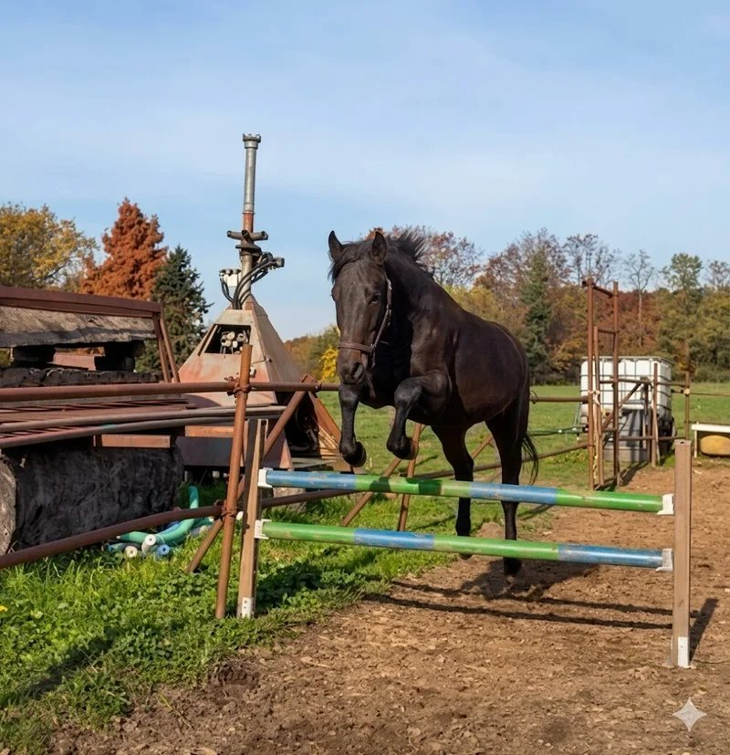

Valutazione osservazionale dolore a riposo
Osservazione strutturata di indicatori comportamentali a riposo, con riferimento a etogramma statico/facciale.
Servizi
Ogni servizio VHT parte da una domanda concreta: cosa sta succedendo a questo cavallo, in questo ambiente, con questa persona?
La Dott.ssa Veronica Pirro lavora con privati, maneggi e centri ippici in Monza e Brianza e province limitrofe per migliorare comunicazione, gestione, benessere e collaborazione attraverso percorsi science-based e non coercitivi.
Privati
Se il cavallo fatica a collaborare, mostra tensione, rifiuti, paura o difficoltà nelle routine, il primo passo è leggere il quadro con criterio e competenza. I servizi per privati aiutano a trasformare il problema in un percorso di lavoro chiaro e sostenibile.
Vai al listino privatiOsservazione strutturata di indicatori comportamentali a riposo, con riferimento a etogramma statico/facciale.
Osservazione di indicatori comportamentali durante il lavoro montato, con riferimento a RHpE / Dynamic.
Valutazione combinata a riposo e montato per avere una lettura più completa del quadro osservazionale.
Sessione pratica per migliorare comunicazione, precisione, collaborazione e gestione del rinforzo.
Lezione da luglio — AICS, con attenzione a relazione, chiarezza degli aiuti e benessere del binomio.
Check-up completo con consulenza da 30 a 45 minuti, per una durata totale dell’appuntamento di circa 1 ora.

Strutture
Una struttura lavora bene quando gestione quotidiana, sicurezza, benessere e competenze dello staff procedono nella stessa direzione. I servizi per centri ippici aiutano a osservare, organizzare e migliorare il lavoro in scuderia.
Formazione
La formazione VHT è pensata per proprietari, appassionati e strutture che vogliono passare dal “fare esercizi” al comprendere davvero comportamento, apprendimento e gestione.
Fondamenti, segnale ponte, gestione del rinforzo, timing e progressione degli esercizi.
Lettura dei segnali, bisogni del cavallo, contesto ambientale e qualità della gestione.
Sessioni pratiche per migliorare precisione, sicurezza, relazione e collaborazione.
Le valutazioni osservazionali e comportamentali non sostituiscono visita veterinaria, diagnosi clinica o interventi sanitari.
In presenza di dolore, zoppia, patologie, cambiamenti improvvisi del comportamento o dubbi fisici, è sempre necessario rivolgersi al medico veterinario.
Scelta del servizio
Scrivi a Dott.ssa Veronica Pirro su WhatsApp indicando zona, cavallo, difficoltà principale e obiettivo: sarà più semplice orientarsi tra consulenza, sessione pratica, valutazione o formazione.